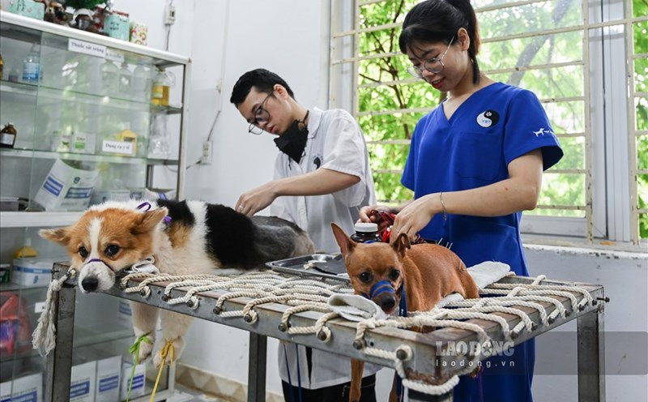

My name is Tuan Anh. For a long time, my path seemed pre-determined. Following a deep-rooted family tradition, I set aside my childhood fascination with technology to pursue a career in Veterinary Medicine.

Illustrative image: Period of dedication to the Veterinary industry
After graduation, I entered the workforce and achieved a stable position with a respectable income. However, a realization began to dawn on me: I couldn't spend my entire life doing something that didn't set my soul on fire. The "stable" life felt empty because it lacked the lines of code and logical puzzles I truly loved.
In a bold move, I decided to resign from my veterinary career. It wasn't an easy choice to leave a high-paying job for the volatile and ever-changing world of Information Technology. But for the first time, I felt truly alive.
Illustration: Pursuing a passion for Information Technology
Now, as I immerse myself in tech, I am happier than ever. I've learned that you must give your absolute best to truly understand your potential. The road ahead, connecting my life with IT, is still long and full of mysteries.
"No one knows what tomorrow holds. I’ll just keep moving forward and wait for the results."